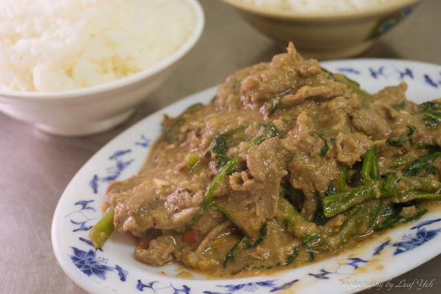
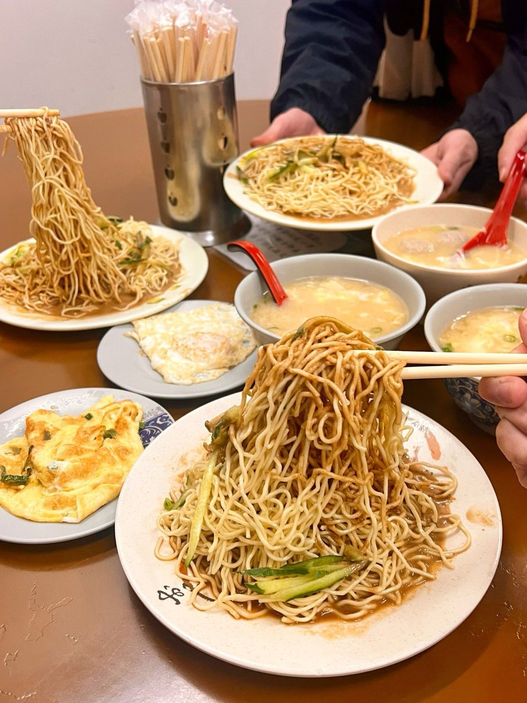

台北
人 是臺北最美的風景
從世界最高樓（2004~2010年）到國際級的中華藝術典藏，我們誠摯的邀請您來到這個充滿著對比的城市。現代與傳統相互包容外，再結合了無比活力與親切笑容，臺北定會成為您在亞洲最美好的回憶。
在臺北，您每個所到之處，多樣的文化特質都充沛鼓動著。雕龍畫棟的廟宇與現代的街道完美吻合，還有許多世界級餐廳隨時提供您最正統的各式中華料理。別忘了，美味的夜市小吃不僅僅帶給您口腹的滿足，更是引領您體驗臺灣生活的理想去處。
臺北的相對性也在都市與自然接壤之間顯現。幾分鐘的車程，您就能在山林環繞下，浸醞於柔潤的溫泉中。還有許多親山步道與公園在城市間穿梭點綴，一日庸碌繁忙後，陪伴著您沉靜心靈。
無論您是短暫停留或是計畫長期拜訪，臺北所蘊藏的多樣性絕對會讓您回味無窮。
來臺北，感受亞洲之美。
士林生炒羊肉
(台北市士林區大東路21-3號)
這攤士林生炒羊肉可說是士林夜市中的超強隱藏版美食，菜單上只有四種單品：炒羊肉、白飯、飲料、啤酒。
他們家採用進口的羊肉，因此羊肉沒有帶點騷味，連討厭吃羊肉的都能接受。不像外頭的一般沙茶醬，醬汁為店家特別調製，
帶點芝麻花生香氣，留下來的醬汁記得拌飯吃，超下飯。

劉媽媽涼麵
(台北市市民大道五段37號)
位於京華城附近的劉媽媽涼麵，是許多計程車司機和年輕人跑完夜店後的必吃宵夜。
菜單上就只有三種類別讓你挑選：涼麵、湯、蛋。涼麵的麻醬醬汁充滿濃郁的蒜香與芝麻香，
濃稠到和麵攪拌時有點困難，但入口後的香氣久久無法散去！

阿財虱目魚
(台北市萬華區內江街53號)
曾被美食家胡天蘭讚不絕口的滷肉飯，是肥肉比例偏多的滷肉飯，滷到軟爛的肥肉入口即化，
搭配粒粒分明的白飯，肉香、醬汁香充斥了整個口腔。點一碗清爽的魚肚湯，鮮甜的魚肉、薑絲清湯，
能一解滷肉飯的油膩感。肚子非常餓的話，不妨多點幾道熱炒菜，像是三杯花枝、炒青菜、菜圃蛋等，都是招牌菜。